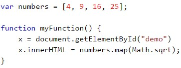
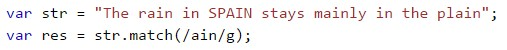

Map()
The map() method creates a new array with the results of calling a function for every array element. The map() method calls the provided function once for each element in an array, in order.
Note: map() does not execute the function for array elements without values.
Note: map() does not change the original array.
Example:
Match()
The match() method searches a string for a match against a regular expression, and returns the matches, as an Array object.
Example:
MediaDevices
The Navigator.mediaDevices read-only property returns a MediaDevices object, which provides access to connected media input devices like cameras and microphones, as well as screen sharing.
Example: